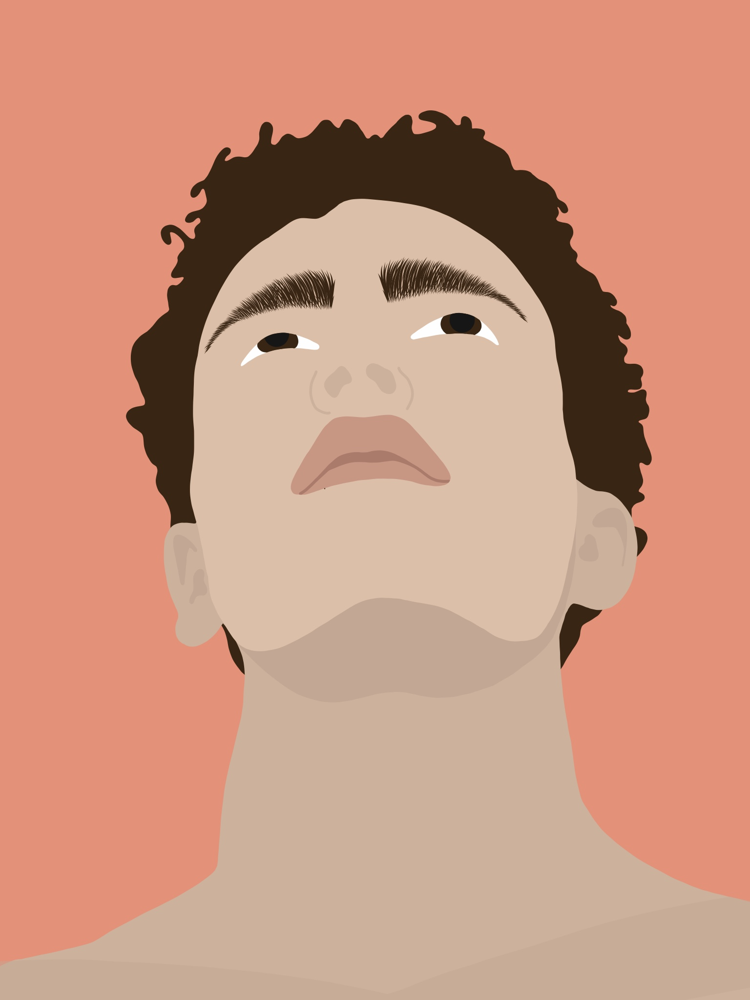
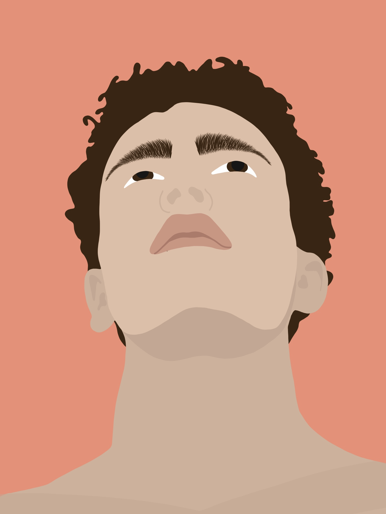

My work
 

When I was younger, I always loved drawing. During my time in High School I stopped because I didn't have enough time. Now that I am studying Graphic and Digital Media I picked up my old hobby and started making digital portraits. I share all my portraits on my Instagram account where I get weekly request of people asking to draw a portrait of them.